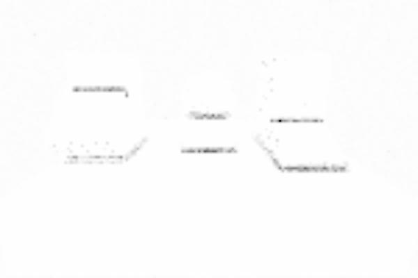

SSAO
- SSAO / Screen Space Ambient Occlusion
- 주변물체에 의해서 가려지는 곳이 어둡게 되어, 장면의 깊이감을 더함.
- Ambient : 주변
- Occlusion : 차폐, 가려짐



역사
- 2001 : 영화 진주만Pearl Harbor에서 Ambient Occlusion 사용
- 2007 : 게임 Crytek의 Crysis에서 SSAO(Screen Space Ambient Occlusion)등장
- 실제 지오메트리 데이터를 이용하는게 아니라 화면 공간 뎁스를 이용.
- 2008 : SIGGRAPH2008에서 Nvidia 기존 SSAO개선판 HBAO(Horizon Based Ambient Occulusion)발표.
- 노멀등 추가정보를 이용.
- 2011 : MSSAO(Multi-Scale Screen Space Ambient Occlusion)
- 2016 : SIGGRAPH2016에서 GTAO(Ground True Ambient Occulusion) 소개.
- …
샘플링 : 구? 반구?

- Sphere - Crysis Method
- 특정 점의 구형(Sphere) 주변의 뎁스값을 수집 및 계산 => 구형속 뎁스값이 많아지면 어두워짐
- 구형 주변의 샘플 갯수가 적으면, 정밀도가 줄어들고 소위 (줄무늬가 드리워지는) banding이라는 현상 발생.

- Normal-oriented Hemisphere
- 특정 점의 노말방향으로 반구형(Hemisphere) 주변의 뎁스값을 수집 및 계산
구현
- 반구 주변의 점으로 가려짐 정도(Occlusion factor) 계산
- 성능상 샘플링 갯수를 줄이는게…
- 계산된 가려짐 정도를 블러(Blur)로 적당히 흐려지게 만들기
- 원본 텍스쳐에 적용
// 1. 가려짐 정도(Occlusion factor) 계산
// 2. 계산된 가려짐 정도를 블러(Blur)로 적당히 흐려지게 만들기
// 3. 원본 텍스쳐에 적용
half4 mainTex = SAMPLE_TEXTURE2D(_MainTex, sampler_MainTex, IN.uv);
half ambientOcclusionTex = SAMPLE_TEXTURE2D(_AmbientOcclusionTex, sampler_AmbientOcclusionTex, IN.uv).r;
col.rgb *= ambientOcclusionTex;
return col;
// https://babytook.tistory.com/171
꽁수 1 : 2x downscaled depth buffer 사용
꽁수 2 : 랜덤 ray 벡터를 랜덤 벡터로 reflect (회전 변환보다 싸다)
꽁수 3 : view normal 값을 사용할 수 있다면 self occlusion 을 피하기 위해 sign(dot(ray, n)) 을 곱한다
꽁수 4 : 카메라와 가까이 있는 픽셀의 ray 는 작게 scale 하여 어색함을 줄임
꽁수 5 : 깊이값 비교 함수를 적절히 조절 ^^;
예)
| rt | 넓이, 높이 |
| -------------------- | ---------- |
| source | w, h |
| _TmpCopy | w, h |
| _AmbientOcclusionTex | w/4, h/4 |
| _BlurTex0 | w/8, h/8 |
| _BlurTex1 | w/16, h/16 |
source, _TmpCopy : 복사
_TmpCopy, _AmbientOcclusionTex : Occlusion factor 계산
_AmbientOcclusionTex, _BlurTex0 : 블러 - DownSampling
_BlurTex0, _BlurTex1 : 블러 - DownSampling
_BlurTex1, _BlurTex0 : 블러 - UpSampling
_BlurTex0, _AmbientOcclusionTex : 블러 - UpSampling
_TmpCopy, source : 원본 텍스쳐에 적용
흠 어차피 블러시킬것이고 채널 하나밖에 안쓰니, (r 혼은 rgb 채널 쓰는) Bloom효과에서 안쓰는 채널(a) 이용하면 괜춘할듯.
case
// [assetstore - Fast SSAO ( Mobile , URP , VR , AR , LWRP )](https://assetstore.unity.com/packages/vfx/shaders/fullscreen-camera-effects/fast-ssao-mobile-urp-vr-ar-lwrp-169024)
// 깊이텍스쳐를 이용해서 노말을 구하고, 노말방향으로 레이를 쏴서 AO를 구함.
// 빠름은 1번, 보통은 3번의 occlusion을 구하도록 코드가 작성됨.
float depthDiff = srcDepth - dstDepth;
float occlusion = step(0.02h, depthDiff) * (1.0h - smoothstep(0.02h, _Area, depthDiff));
/// [canny - SSAO (Screen Space Ambient Occlusion)](https://blog.naver.com/canny708/221878564749)
// 중앙점 픽셀로부터 일정 범위 내에 있는 랜덤 위치의 샘플 좌표의 위치 값과 노멀 벡터를 얻어온 후,
// 중앙점의 노멀과 비교하여 각도가 가파를수록, 위치가 가까울수록 차폐의 영향이 크다고 판단.
// depth버퍼로 positionWS랑 normal을 구할 수 있다.
inline float Random(in float2 uv)
{
// 렌덤텍스쳐 이용하는 방법
// return SAMPLE_TEXTURE2D(_RandTex, sampler_RandTex, uv).r;
// 그냥 계산하는 방법
return frac(sin(dot(uv, float2(12.9898, 78.233))) * 43758.5453);
}
float3 GetWorldSpacePosition(in float2 uv)
{
float sceneRawDepth = SampleSceneDepth(uv);
return ComputeWorldSpacePosition(uv, sceneRawDepth, UNITY_MATRIX_I_VP);
}
inline float3 GetNormal(in float2 uv)
{
return SampleSceneNormals(uv);
}
float3 srcPos = GetWorldSpacePosition(IN.uv);
float3 srcNormal = GetNormal(IN.uv);
const int SAMPLE_COUNT = 32;
float AO = 0;
// 매 계산마다 depth를 불러오니 => 32번 depth를 불러온다
for (int i = 0; i < SAMPLE_COUNT; ++i)
{
float2 dstUV = IN.uv + (float2(Random(IN.uv.xy + i), Random(IN.uv.yx + i)) * 2 - 1) / _ScreenParams.xy * _Radius;
float3 dstPos = GetWorldSpacePosition(dstUV);
float3 distance = dstPos - srcPos;
float3 direction = normalize(distance);
float delta = length(distance) * _Scale;
AO += max(0, dot(srcNormal, direction) - _Bias) * (1 / (1 + delta)) * _Amount;
}
AO /= SAMPLE_COUNT;
AO = 1 - AO;
return half4(AO.xxx, 1);
// [(X) SSAO (Screen Space Ambient Occlusion) 처리 기법(소스포함)](http://eppengine.com/zbxe/programmig/2982)
// - backup : https://babytook.tistory.com/158
// 장점 : 따로 blur pass 를 실행할 필요가 없다. ( 랜덤맵 텍스쳐를 활용하기에 가능한 부분)
// 시각적 품질이 나쁘지 않다.
// 노멀 버퍼없이도 깔끔하다.
// 단점 : 전통적 ssao 보다는 좀 느리다.
// 역시 노멀 버퍼를 사용하지 않는 것 으로 인한 약간의 시각적 어색함이 존재.. 약간...
//
uniform sampler2D som; // Depth texture
uniform sampler2D rand; // Random texture
uniform vec2 camerarange = vec2(1.0, 1024.0);
float pw = 1.0/800.0*0.5;
float ph = 1.0/600.0*0.5;
float readDepth(in vec2 coord)
{
if (coord.x<0||coord.y<0) return 1.0;
float nearZ = camerarange.x;
float farZ =camerarange.y;
float posZ = texture2D(som, coord).x;
return (2.0 * nearZ) / (nearZ + farZ - posZ * (farZ - nearZ));
}
float compareDepths(in float depth1, in float depth2,inout int far)
{
float diff = (depth1 - depth2)*100; //depth difference (0-100)
float gdisplace = 0.2; //gauss bell center
float garea = 2.0; //gauss bell width 2
//reduce left bell width to avoid self-shadowing
if (diff < gdisplace)
{
garea = 0.1;
}
else
{
far = 1;
}
float gauss = pow(2.7182,-2*(diff-gdisplace)*(diff-gdisplace)/(garea*garea));
return gauss;
}
float calAO(float depth,float dw, float dh)
{
float temp = 0;
float temp2 = 0;
float coordw = gl_TexCoord[0].x + dw/depth;
float coordh = gl_TexCoord[0].y + dh/depth;
float coordw2 = gl_TexCoord[0].x - dw/depth;
float coordh2 = gl_TexCoord[0].y - dh/depth;
if (coordw < 1.0 && coordw > 0.0 && coordh < 1.0 && coordh > 0.0)
{
vec2 coord = vec2(coordw , coordh);
vec2 coord2 = vec2(coordw2, coordh2);
int far = 0;
temp = compareDepths(depth, readDepth(coord),far);
//DEPTH EXTRAPOLATION:
if (far > 0)
{
temp2 = compareDepths(readDepth(coord2),depth,far);
temp += (1.0-temp)*temp2;
}
}
return temp;
}
void main(void)
{
//randomization texture:
vec2 fres = vec2(20,20);
vec3 random = texture2D(rand, gl_TexCoord[0].st*fres.xy);
random = random*2.0-vec3(1.0);
//initialize stuff:
float depth = readDepth(gl_TexCoord[0]);
float ao = 0.0;
for(int i=0; i<4; ++i)
{
//calculate color bleeding and ao:
ao+=calAO(depth, pw, ph);
ao+=calAO(depth, pw, -ph);
ao+=calAO(depth, -pw, ph);
ao+=calAO(depth, -pw, -ph);
ao+=calAO(depth, pw*1.2, 0);
ao+=calAO(depth, -pw*1.2, 0);
ao+=calAO(depth, 0, ph*1.2);
ao+=calAO(depth, 0, -ph*1.2);
//sample jittering:
pw += random.x*0.0007;
ph += random.y*0.0007;
//increase sampling area:
pw *= 1.7;
ph *= 1.7;
}
//final values, some adjusting:
vec3 finalAO = vec3(1.0-(ao/32.0));
gl_FragColor = vec4(0.3+finalAO*0.7,1.0);
}
Ref
- Game Engine Gems, Volume 1 - 18. Fast Screen-space Ambient Occlusion and Indirect Lighting
- https://babytook.tistory.com/171
- https://github.com/sebastianhein/urp-ssao
- https://learnopengl.com/Advanced-Lighting/SSAO
- https://ogldev.org/www/tutorial45/tutorial45.html
- https://github.com/Unity-Technologies/Graphics/blob/master/com.unity.render-pipelines.universal/ShaderLibrary/SSAO.hlsl
- SIGGRAPH2007 - Finding Next Gen - CryEngine 2
- GDC2008 - Real-Time Depth Buffer Based Ambient Occlusion
- SIGGRAPH2008 - Image-Space Horizon-Based Ambient Occlusion
- SIGGRAPH2009 - Multi-LayerDual-ResolutionScreen-SpaceAmbient Occlusion
- SIGGRAPH2010 - Rendering techniques in Toy Story 3
- SIGGRAPH2016 - Practical Real-Time Strategies for Accurate Indirect Occlusion
- 일어